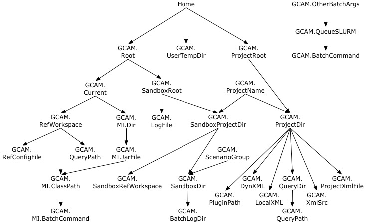

Installation¶
To run pygcam, you need a Python 2.7 environment, Java, and GCAM.
Follow the steps below to install these. More information is available
Using pygcam under Windows for Windows users.
Install Anaconda¶
A convenient way to install and manage a Python environment is to use
the free Anaconda distribution.
You can use any installation of Python 2.7 if you prefer. Anaconda
includes most of the scientific and statistical modules used by pygcam.
Without Anaconda you may have to install more packages.
Install GCAM¶
You probably already have GCAM or you wouldn’t be reading this. But for completeness:
Setting up a structure for pygcam¶
A convenient way to manage GCAM is to create a folder called GCAM in your home directory (or anywhere you prefer). Copy the latest GCAM distribution (zip file) into this directory, and unzip the file.
Within this folder you might create a symbolic link called current which
points to the current version of GCAM. This allows you to switch versions simply
by changing the symbolic link. All pygcam configuration and project information
will remain valid (unless, of course, the internal file structure of the GCAM
distribution changes.)
Note that on Windows, the file explorer unhelpfully creates two folders with the
same name. That is, if you unzip GCAM_4.2_r6539_User_Package_Windows.zip, you
end up with a folder named GCAM_4.2_r6539_User_Package_Windows, and within it,
another folder named GCAM_4.2_r6539_User_Package_Windows. In the file explorer,
change the name of the outer folder to something else (‘x’ will do), and move the inner
folder up one level. Delete the empty outer folder (‘x’, or whatever you called it.)
Install pygcam¶
Install pygcam:
python setup.exe install
Initialize the configuration file¶
The first time gt is run, it will create a default
configuration file with all options present but commented out.
Running gt -h, will print a usage message and create
the initial configuration file (unless one is already present). The
file is .pygcam.cfg found in your home directory.
Below are some key parameters you may wish to modify in your
.pygcam.cfg file.
[DEFAULT] # Set a default project to use if the "-P" flag is not specified to gt. GCAM.DefaultProject = XXX # # Define parameters specific to project "XXX" # [XXX] # Root directory in which to find user's project folders GCAM.ProjectRoot = %(Home)s/GCAM/XXX-dir # The location of the default input file for the "run" sub-command GCAM.ProjectXmlFile = %(GCAM.ProjectRoot)s/etc/project.xml # These are used by the "query" sub-command GCAM.QueryPath = %(QueryDir)s:%(QueryDir)s/Main_Queries_Customized.xml GCAM.RegionMapFile = %(User.ProjectRoot)s/etc/Regions.txt # Change this if desired to increase or decrease diagnostic messages. # Possible values (from most to least verbose) are: # DEBUG, INFO, WARNING, ERROR, CRITICAL GCAM.LogLevel = DEBUG # Sets the directory under which the "gcam" sub-command should create GCAM # workspace directories before running GCAM GCAM.RunWorkspaceRoot = %(Home)s/ws # Tells gt where to look for plugins. Set to your project's plugin # directory if you have any plugins to load. # GCAM.PluginPath =
Default configuration variable dependencies¶
The following figure shows variable dependencies according to the default
definitions. Variables lower in the figure depend on those above them. Thus,
if you change a variable with “descendants”, you affect the definition of
everything below it in the figure. See the generated ~/.pygcam.cfg for
further information.

Working with the pygcam source code¶
To examine or modify the pygcam Python code, you need to download
the code using git.
Unix-like platforms¶
You probably have git already. Otherwise, find
a current version for your platform. Do the following:
Open a terminal window. (Mac users can find this in /Application/Utilities/Terminal.app)
For this example, we will create a folder called
xin our home directory to hold thegitrepository. Use any name you prefer. Run these commands to download a copy of the Python files:mkdir ~/bb cd ~/bb git clone git@bitbucket.org:plevin/pygcam.gitConfigure Anaconda to know where the source code version of pygcam lives. TO BE DONE
Windows users¶
These are written assuming you have installed the Cygwin tools describe above on the Using pygcam under Windows page of this documentation. Follow the following steps:
Install git (or a GUI version like Tortoise.)
Make a new folder to hold your git repository. For the sake of an example, we’ll make a new directory called
bb(for bitbucket) in our home directory, but you can call this whatever you like.mkdir ~/bb # ~ is shorthand for your home directoryOpen a
cygwin terminalrun these commands to download the source code:cd ~/bb git clone git@bitbucket.org:plevin/pygcam.git
Tell python where pygcam is installed¶
To configure Anaconda to know where the source code version of pygcam is installed, do the following.
Run the following command to have Python print out the location of the “user site” directory, i.e., where we will create a ”.pth” file:
python -c 'import site; site._script()' --user-siteCreate a file in the “user site” directory called
pygcam.pth. The line should contain a single line with the full pathname to the location to the top-level folder of thepygcamsource code. (The file can be called anything as long as it ends in.pth.) You can do this with a text editor, or with the following commands, however be sure to replace pygcam-source-path with the path to thepygcamsource, and user-site-path with the path displayed by the command above.# For this example, we assume that the user site (printed by the # command above) is /Users/rjp/.local/lib/python2.7/site-packages, # and we have cloned pygcam into the folder /Users/rjp/bb/pygcam: echo /Users/rjp/bb/pygcam > /Users/rjp/.local/lib/python2.7/site-packages/pygcam.pth